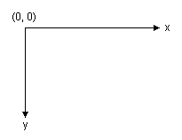
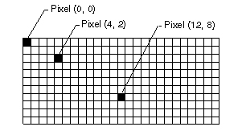
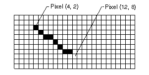

Общие сведения о векторной графике
GDI+ Рисует линии, прямоугольники и других фигур в системе координат. Можно выбрать из различных систем координат, но система координат по умолчанию имеет начало координат в левом верхнем углу ось x вправо, а ось y направлена вниз. Единицы измерения в системе координат по умолчанию является пиксель.
Стандартные блоки GDI +

Монитор компьютера создает его отображение на прямоугольный массив точек, называемых элементами изображения. Разное количество пикселей, отображаемых на экране монитора к другому, а количество пикселей, которые отображаются на отдельных мониторе обычно можно в некоторой степени пользователем.

При использовании GDI+ Чтобы нарисовать линию, прямоугольник или кривой, предоставляют ключевая информация об элементе для отрисовки. Например можно указать строку, предоставляя две точки, и можно указать, предоставляя точку, высоту и ширину прямоугольника. GDI+ работает в сочетании с программным обеспечением драйвера экрана, чтобы определить, какие точек должен быть включен для отображения линии, прямоугольника или кривой. На следующем рисунке пиксели, которые включены для отображения линии из точки (4, 2) в точку ("12", "8").

Со временем некоторые основные стандартные блоки оказались наиболее удобно для создания двухмерных изображений. Эти стандартные блоки, которые поддерживаются системой GDI+, приведены в следующем списке:
Прямых линий
Прямоугольники
Многоточие
Дуги
Многоугольники
Фундаментальные сплайны
сплайны Безье
Методы для рисования с помощью графических объектов
Graphics В класс GDI+ предоставляет следующие методы для рисования элементов в списке выше: DrawLine, DrawRectangle, DrawEllipse, DrawPolygon, DrawArc, DrawCurve (для фундаментальные сплайны), и DrawBezier. Каждый из этих методов перегружена; то есть каждый метод поддерживает несколько различными списками параметров. Например, один из вариантов DrawLine метод получает Pen объекта и четырех целых чисел, а другой вариант DrawLine метод получает Pen и два Point объектов.
Методы для рисования линий, прямоугольников и сплайнов Безье иметь вспомогательные методы, выполняющие нарисовать несколько элементов за один вызов: DrawLines, DrawRectangles, и DrawBeziers. Кроме того DrawCurve метод имеет вспомогательный метод, DrawClosedCurve, что точка кривой, подключившись к начальной конечной точки кривой закрывается.
Все методы рисования Graphics используют с Pen объекта. Чтобы нарисовать что-либо, необходимо создать по крайней мере два объекта: Graphics объекта и Pen объекта. Pen Объект сохраняет атрибуты, такие как толщины и цвета, рисуемого элемента. Pen Объект передается в качестве одного из аргументов метод рисования. Например, один из вариантов DrawLine метод получает Pen объекта и четырех целых чисел, как показано в следующем примере, который рисует прямоугольник с шириной 100, высотой 50 и координатами верхнего левого угла (20, 10):
myGraphics.DrawRectangle(myPen, 20, 10, 100, 50);
Warning
It looks like the sample you are looking for does not exist.